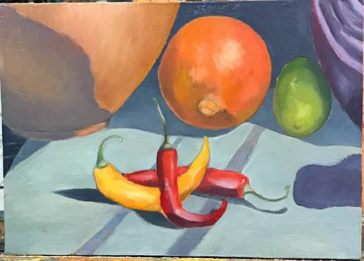
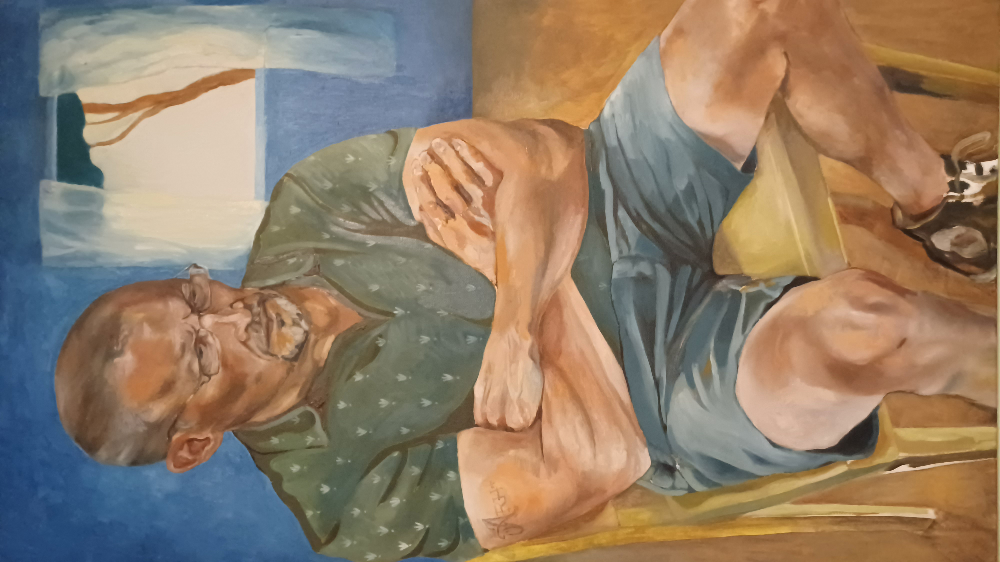

jtapiovaara.github.io
Työn alla oleva Nados luonnonmuistomerkkipalvelu
My Journey to Django -eKirja
p5 blogi - koodausblogi, josta tuotin eKirjan
Oura älysormukselle tekemäni laajennus
myFullstack, +htmx

Karo Tapiovaara, Chilli stillleben, 2020

Karo Tapiovaara, Vanhan ukon muotokuva (taiteilijan isä), 2021